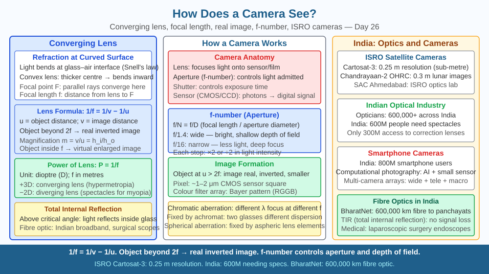

By the end of this lesson, you should be able to apply the lens formula 1/f = 1/v + 1/u to explain image formation, describe what aperture and focal length control, and predict how the field of view changes when a shorter focal length lens is fitted.
You point your phone at a friend three metres away, tap the screen, and in milliseconds a sharp, full-colour image is recorded. The phone camera lens is smaller than your fingernail. How does a tiny piece of glass bend light from a real three-dimensional scene into a flat, sharp image? And why does zooming in make the background blurry while keeping the subject sharp?
A camera captures an image using the principle of refraction through a convex lens. Light rays from every point on a scene travel in straight lines until they hit the curved glass of the camera lens. The curved surface is thicker at the centre than at the edges, so it bends rays from a single point on the object so that they converge to a single point on the sensor or film. This convergence point is the image point. The collection of all image points forms a complete image.
The lens formula relates the object distance (u), image distance (v), and focal length (f) of a convex lens:
1/f = 1/v + 1/u
By convention in NCERT Class 10, distances are measured from the optical centre of the lens: u is negative (object on the left), v is positive for a real image (on the right), and f is positive for a convex lens.
For an object far away (u very large), 1/u ≈ 0, so v ≈ f. This means distant objects are focused very close to the focal point — which is why the focal length of a camera lens tells you roughly where the sensor must sit to capture infinity focus.
Real vs virtual images: A convex lens produces a real image when the object is beyond the focal point (u > f). A real image is inverted and can be projected onto a surface — exactly what happens on the camera sensor. This is why the image on a camera sensor is upside-down; the camera software (or your brain, in the case of the eye) flips it.
Focal length and field of view: A longer focal length lens brings distant objects closer (like a telescope) but captures a narrower angle — a telephoto lens with f = 200 mm gives a narrow field of view. A shorter focal length (f = 24 mm wide-angle) bends light more sharply, fitting a wider scene onto the same sensor, but distant objects appear smaller. A smartphone camera typically has an equivalent focal length of 24–28 mm — wide enough to fit a group of people in a room.
Aperture and the f-number: The aperture is the opening through which light enters. A larger aperture admits more light (useful in dim conditions) and also produces a shallower depth of field — objects at the focused distance are sharp, but objects nearer or farther fall out of focus quickly. Aperture is expressed as an f-number: f/2.8 is wider than f/11. A wide aperture (small f-number) creates the blurred background (bokeh) seen in portrait photography.
Shutter speed: Controls how long the sensor is exposed. A fast shutter speed (1/1000 s) freezes motion; a slow speed (1/30 s) can blur moving subjects but allows more light in dark conditions. Professional photographers balance aperture, shutter speed, and ISO (sensor sensitivity) — the "exposure triangle."
Digital sensors — CMOS technology: Modern cameras use a CMOS (Complementary Metal-Oxide-Semiconductor) sensor. The sensor surface is a grid of millions of tiny photodetectors called pixels (picture elements). Each pixel contains a photodiode that converts incoming photons into electrons — the more photons, the more electrons, the brighter the value recorded. A Bayer colour filter places red, green, or blue filters over alternating pixels; software interpolates to produce full colour at every pixel. A 12-megapixel sensor has 12 million such pixels arranged in a rectangle, typically around 4000 × 3000.
Smartphone optics: Because smartphones are thin, the physical focal length of the lens must be very short — around 4–5 mm actual focal length. This short focal length means the lens bends light very sharply. The trade-off is a very deep depth of field (almost everything in focus simultaneously) and a wide angle of view. Portrait mode simulates a blurred background using software depth estimation, not optical blur.
Image formation in four steps:
Key relationships: - Shorter focal length → more bending → wider field of view → objects appear smaller - Longer focal length → less bending → narrower field of view → objects appear larger (zoomed) - Larger aperture → more light, shallower depth of field - Closer object → image forms farther from lens (v increases)
The included SVG shows a horizontal optical axis. On the left, a vertical arrow (the object) sits beyond the focal point. Three standard rays are drawn: one parallel to the axis (refracts through the far focal point), one through the optical centre (passes straight), and one through the near focal point (refracts parallel). All three rays converge on the right side to form an inverted, smaller real image arrow. Labels show u (object distance), v (image distance), f (focal length), and the equation 1/f = 1/v + 1/u.

A convex lens has focal length f = 10 cm. An object is placed 15 cm from the lens. Use the lens formula 1/f = 1/v + 1/u to calculate the image distance v. Then determine the magnification m = v/u and state whether the image is upright or inverted. Now predict: if the object is moved to 20 cm from the lens, does the image move closer to or farther from the lens? What happens to image size? Finally, at what object distance would the image form at infinity (i.e., v → ∞)?
How does a camera capture an image?
Correct answer: a
Why is understanding lens refraction and focus more useful than just knowing cameras take photos?
Correct answer: a
What would happen to a camera image if the lens were replaced with a much shorter focal length?
Correct answer: b
Explain today's concept to a younger student in 60 seconds without technical jargon. Then explain it again using the correct scientific vocabulary.
If both explanations describe the same mechanism, you have understood the concept rather than memorised it.
A camera obscura — a dark room with a tiny hole in one wall — was used by Renaissance painters to project real scenes onto paper and trace them accurately. Johannes Vermeer is thought to have used one in the 1600s, three centuries before photography existed. The pinhole does exactly what a lens does, but instead of bending light with glass it simply blocks all rays except those that pass through the tiny hole — producing an inverted image with everything in sharp focus, at the cost of almost no light reaching the surface. A lens solves the light problem: it gathers many rays from each object point and bends them all to the same image point, giving brightness without sacrificing sharpness.
A camera forms an image because a convex lens refracts light from every point in the scene to a corresponding point on the sensor, governed by the lens formula 1/f = 1/v + 1/u; a shorter focal length lens bends light more sharply, producing a wider field of view where objects appear smaller in the frame.